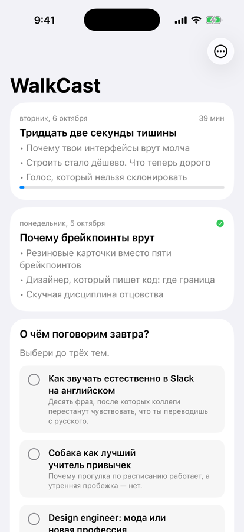
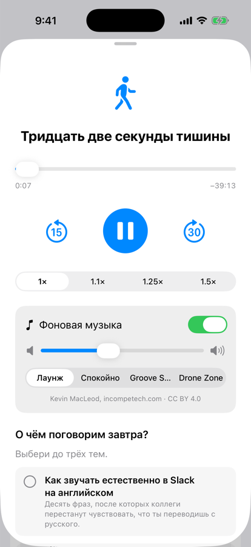

Every night Claude reads what you worked on and thought about yesterday, writes a 35-minute episode on three topics, voices it and has it on your phone by morning. You put on headphones and take the dog out.
Set it up in one promptView on GitHub

Most of what I think about during the day happens in conversations with Claude — designs, code, half-formed ideas, decisions made on the run. I never go back to them. A walk with the dog is my one quiet hour, and I wanted it to be about my life, not a generic podcast. So now Claude does the going back for me.
Not a summary of your day. A smart friend who knows what you're up to and brings something worth thinking about.
Something you mentioned in passing yesterday — with the part the conversation missed.
Career, craft, family, body, money, philosophy, history, something funny. Never the same angle twice in a month.
Written for the ear: context first, one story told to the end, no lists.
Learning English? Each topic slips in a few phrases people actually use.
Including honest critique of your own projects, when it's earned.
Six options under each episode. Tap up to three — tomorrow starts with them.
Everything except the voice runs on your Mac. Only the finished script goes to OpenAI to be read aloud.
Paste this into Claude Code. It asks a few things about you, checks your key, sets up the schedule and plays you a voice sample.
You need a Mac, the Claude desktop app or Claude Code, and an OpenAI API key. On the phone: build the iOS app from app/ with Xcode, or open the web player and add it to your Home Screen — there's no App Store version yet.